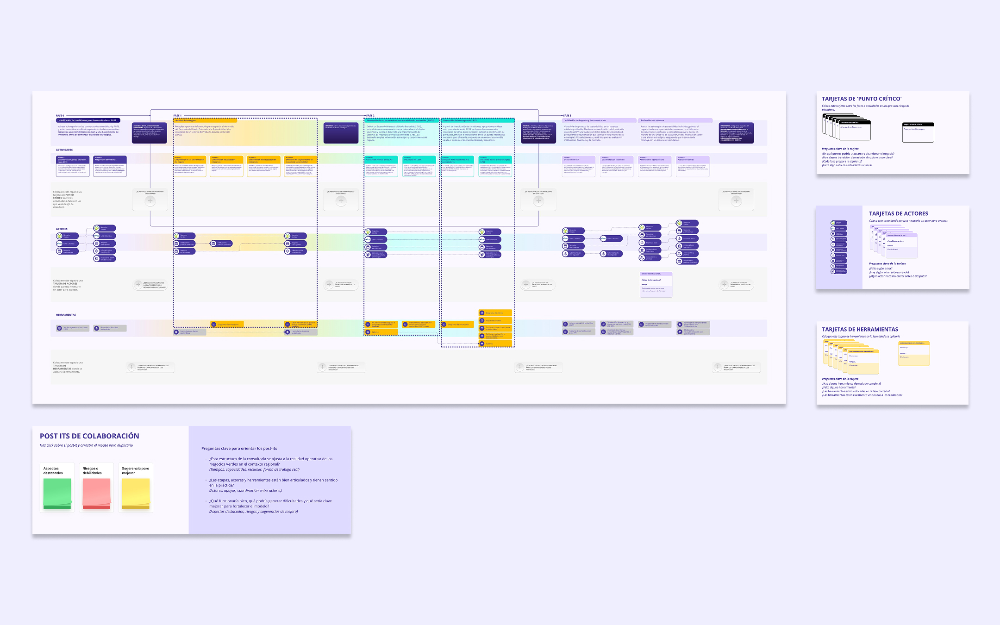
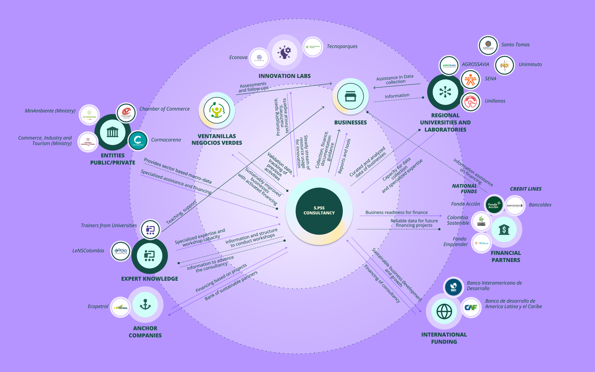
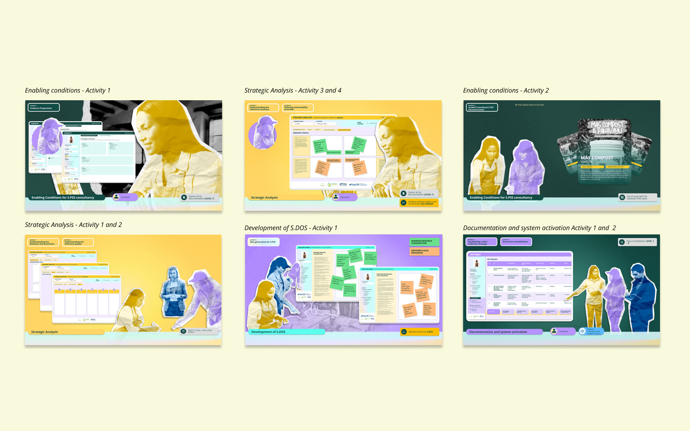
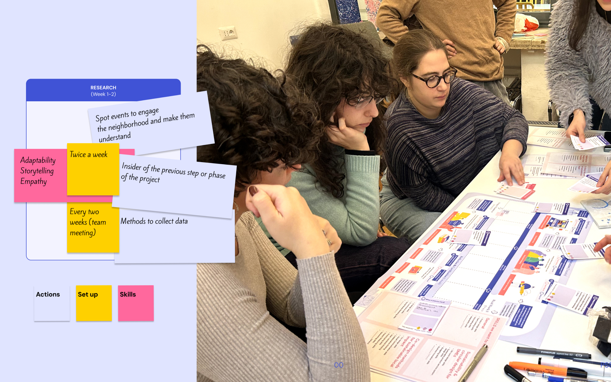
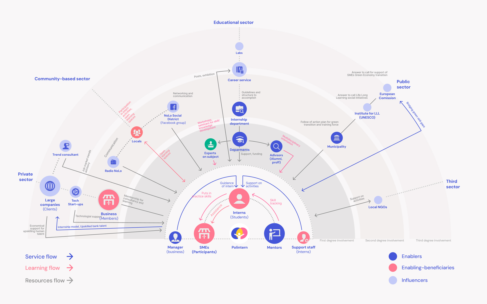
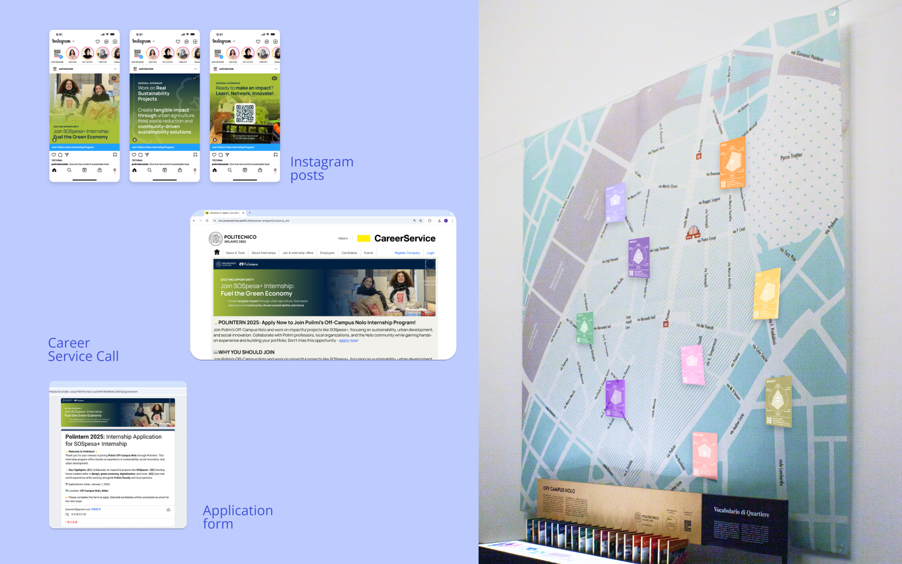
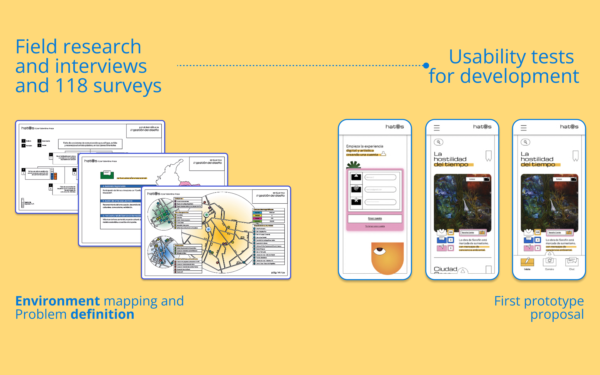
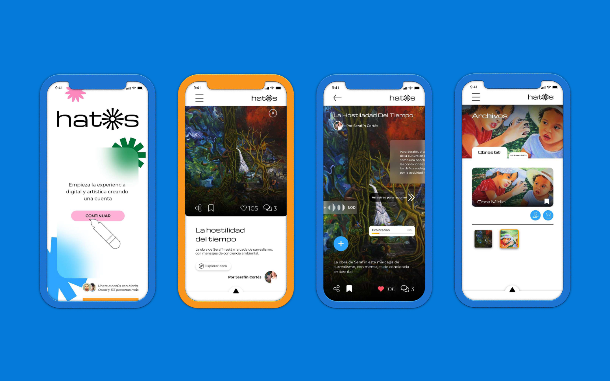
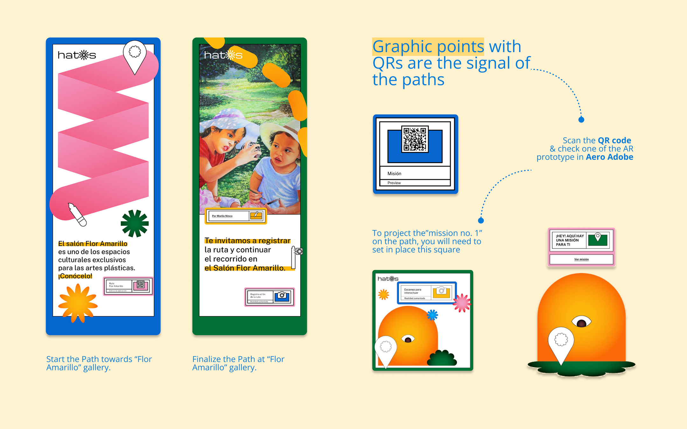

Service design for the public sector and sustainability transitions.
MSc Product-Service System Design Politecnico di Milano, 110/110
Service and UX designer with five years of practice across advertising, the public sector and sustainability programmes. I have worked full-time at a creative agency and for a regional government, and I have freelanced for universities and research groups since 2020.
My work moves from research and co-design to service models, blueprints and interfaces, and I make complex systems easy to understand for the people who use and fund them.
Editorial and visual design for an independent journal on ecologies, territory and human life, with a more-than-human approach.
Turned interviews, essays and artist features into visual formats for the website and social channels, matching each piece's editorial genre.
Video editing and motion content for short-form publication.
Jan 2020 – present
Editorial and Information Designer
Freelance, remote
Visual communication, editorial design and data visualisation for international universities, research groups and professors.
Translated complex research, data sets and findings into visual material for international conferences and symposiums.
Designed layouts and covers for academic books, institutional journals and public policy booklets, with formal publication credits.
Key academic collaborations(3)
Universidad Autónoma de Chiriquí, Panamá (2026). Cover for the journal Revista Iberoamericana de Innovación Científica JA TUAIDA (Vol. 3, No. 2, late 2026) and visual material for related conferences.
Grupo de Investigación RAET (2023 – present). Data-to-visual work for conference presentations and ongoing editorial design of the public policy booklet El “Referencial RAET”.
Universidad Pedagógica y Tecnológica de Colombia (2020). Editorial design of two institutional publications, and dense financial, organisational and market research turned into executive-ready visuals.
Jan 2025 – Mar 2025
Design Research Intern
LeNSlab, Politecnico di Milano
Coordinated the guidance materials for the lab's Sostenibilità Ambientale di Prodotto website, with a repeatable content and update workflow for future interns.
Improved the ICS Toolkit for the Design per la Sostenibilità Ambientale course, optimising its Excel formulas so the built-in functions work reliably.
Curated and synthesised international case studies for the System Social Equity Cohesion guidelines, mapping the digital dimension of equity.
Jan 2022 – May 2023
Graphic Designer
Environmental Secretariat, Government of Meta, Villavicencio, Colombia
Managed the communication strategy of four concurrent sustainability policy projects, aligning public institutions, private businesses and environmental advocates.
Designed and oversaw the production of 100+ communication assets across channels, increasing civic engagement and the Secretariat's regional visibility.
Led brand and narrative development for 15+ enterprises in the Negocios Verdes programme, making complex sustainability propositions easy to understand.
May 2021 – Jan 2022
Creative and Design Lead
Manager Agency SAS, Villavicencio, Colombia
Managed end-to-end design for five clients in retail, automotive and education, keeping a clear strategic direction from brief to delivery.
Led a team of four creatives (designers, video editors, web developers) and built a culture of constructive feedback that raised quality and autonomy.
Education(3)
2023 – 2026
MSc Product-Service System Design
Politecnico di Milano, Italy. Graduated 110/110
Thesis: A Contribution to Negocios Verdes: Designing a Consultancy Model for Sustainable PSS. Sustainable PSS methods to support SMEs in the Global South through design-led tools, public programmes and academic collaboration.
2019 – 2022
Master in Design Management
Universidad de Bogotá Jorge Tadeo Lozano, Colombia
2016 – 2020
Bachelor in Graphic Design
Universidad de Bogotá Jorge Tadeo Lozano, Colombia
Skills
Service design and research
Service blueprinting
Journey mapping
Stakeholder mapping and engagement
Participatory design and co-design facilitation
Systems thinking
Sustainable PSS and design for sustainability
Interaction and UX/UI design
Wireframing, prototyping and interaction design in Figma
User flows and site maps
Interaction patterns and usability principles
Typography and visual language for digital platforms
Design systems awareness
AI-assisted image and video editing
Research and analysis
Qualitative research and synthesis
Case study analysis and desk research
Translating insights for non-design audiences
Data structuring and logic in Excel
Communication and visual storytelling
Narrative design
Visual identity and branding
Multi-channel communication strategy
Presentation design
Workshop design and facilitation
Tools
Figma
Miro
Adobe Creative Suite
Microsoft Office
Google Workspace
Mendeley
Claude
Consensus
Visual Studio Code
Languages(3)
SpanishNative
EnglishC2, proficient
ItalianB2, intermediate
Levels from A1 to C2, Common European Framework of Reference.
Other qualifications
June 2026
McKinsey Forward
Training in agile, digital and future-of-work skills
June 2026
EF SET English Certificate
C2, proficient
Availability
Right to work
Full legal authorisation to work in Italy. Residence permit for job seeking (Permesso di Soggiorno per Ricerca Lavoro).
Based in
Milan, Italy
Start
Available immediately
Looking for
Service design, Researcher in Design, UX/UI and design-consulting roles
Selected work(3)
Three projects, from research to a working service model. Open each one to read the problem, the process and the outcome.
A consultancy model that helps Colombian SMEs move toward sustainable product-service systems.
Context
MSc thesis, Politecnico di Milano
Team
Sole designer
My role. Research design, fieldwork, participatory validation and adaptation of the conceptual model. Supervised by Prof. Carlo Vezzoli.
The problem
Colombian SMEs are expected to adopt sustainable business models, but they face skills gaps, little access to finance and a “survival mode” culture where daily operations crowd out strategy. The regional Ventanillas de Negocios Verdes verify green businesses against 12 criteria to grant the Aval de Confianza, but have little capacity to go beyond verification and give strategic advice. And while Sustainable PSS methods have matured for two decades, very few are adapted to Latin American conditions.
The process
A research-through-design process in two cycles. First, semi-structured interviews with Ventanilla operators and a member of the LeNS Colombia Network to map barriers, capacities and needs. Then, validation of the emerging model in a group ideation-matrix session with different actors and four one-to-one sessions with operators and academic experts, first on boards and then as open conversations.
The outcome
A four-phase consultancy model the Ventanillas can add to their services. Businesses enter according to their maturity, through a full, partial or accelerated pathway, and a Phase 0 sets the enabling conditions first to reduce risk. An ecosystem map connects validation, consultancy, business support and financing with regional partners. By Phase 3, each business has actionable documentation, validated KPIs and an active route to financing.

First version of validation session materials for the first encounter with operators and academic experts.

Ecosystem map: service, information and financing flows between the Ventanillas, businesses and partners.

Storyboard: what changes for the business, and when.
A reimagined internship programme that connects students' learning with the green transition of local businesses in Milan.
Context
Team project, NoLo district, Milan
Team
Team of six
My role. Synthesised desk research and session data into the insights that framed the concept. Contributed to the strategic definition of the service offering, ecosystem map and blueprint, and produced their visual translation. Supported the co-design sessions with structure, timing, facilitation and materials.
The problem
In Europe, 23% of workers are underqualified and 28% work in roles that don't match their education (European Commission, 2020). Students have few chances to apply what they learn in real settings, and the small businesses around them often lack the resources and expertise to adopt sustainable practices and new technology.
The process
Three stages: research, ideation and development, built on a review of 90 sources, 10 interviews, 2 prototyping sessions and 2 co-design sessions. With off-campus interns in NoLo we explored their needs, the skills they wanted and how PolIntern should differ from a traditional internship. With two local SMEs we explored how interns could support their green transition, using journey-map building, challenge cards and advice cards.
The outcome
A 10-week hybrid internship where multidisciplinary teams of interns work with several SMEs and the local community on real challenges, supported by mentors and experts. It starts with skills matching and a welcome toolkit and ends at the NoLo Fair, where interns present their work and receive certification. The service is defined by a value proposition for SMEs, students and a shared learning network, an ecosystem map, a blueprint, the intern's journey map and a set of multichannel touchpoints.

First co-design session with off-campus members and interns.

Ecosystem map: service, learning and resource flows between interns, SMEs, mentors and the neighbourhood.

Touchpoints: social posts, Career Service call, application form, wall of progress and kits.
A hybrid digital and physical system that helps visual artists in Colombia's Eastern Plains show and promote their work.
Context
Master's thesis in Design Management, Universidad Jorge Tadeo Lozano
Team
Sole designer
My role. Research, strategy, system design, prototyping and validation.
The problem
Visual artists in the Llanos Orientales struggle to promote their work through regional media. Exhibition spaces are scarce, institutions offer little support, and the promotion of their work lacks management and formalisation.
The process
Field research with interviews and 118 surveys, followed by environment mapping and problem definition. I built the experience around two personas, the Artist and the Art Lover, designed a blueprint that merges physical and digital touchpoints, and refined the first prototype through usability tests.
The outcome
A platform that documents each artist's work and creative background, with augmented reality, navigation guides, interactive panels, route tracking and a points system to keep visitors engaged. Its Paths link galleries and public spaces into hybrid circuits, marked in the street by graphic points with QR codes. The name comes from the hato llanero, once the heart of Llanero culture and social life.

From environment mapping to the screens used in usability tests.

The platform: artists' work, AR, navigation guides and route tracking screens of the second iteration.

Graphic points with QR codes mark each Path toward the gallery.